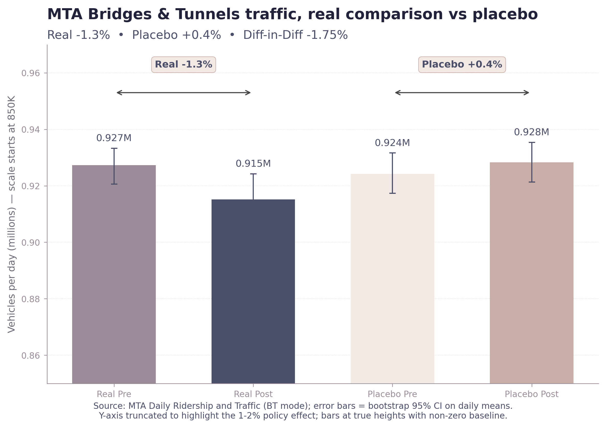
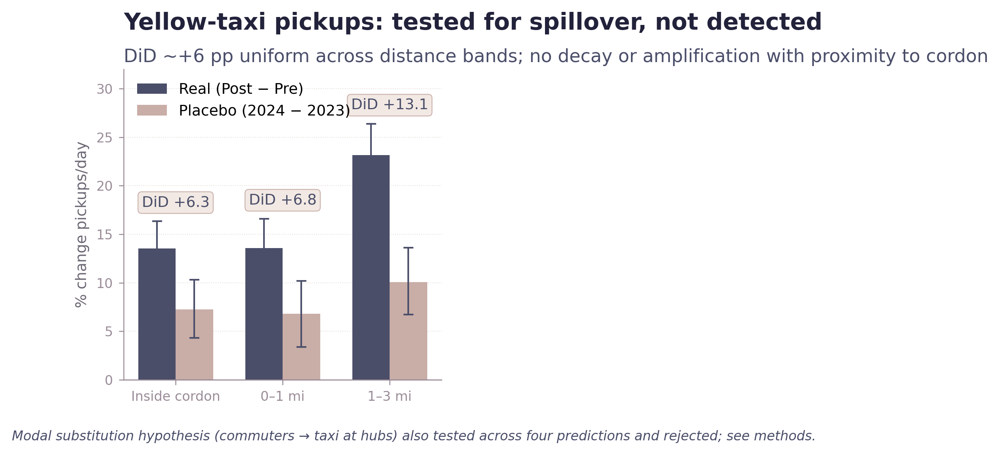

Traffic, transit, and the spillover effects that did — and didn't — appear.
The air-quality analysis is the clearest finding in this project, but it is not the only pattern examined.
The analysis also tested whether fewer vehicles entered Manhattan, whether transit ridership increased, and whether congestion-zone avoidance produced spillover taxi demand near the cordon boundary.
The evidence suggests vehicle entries declined modestly, transit ridership increased unevenly across modes, and the anticipated taxi spillover pattern did not appear in yellow-taxi data.
Vehicle entries into Manhattan
MTA bridge and tunnel traffic declined approximately 1.3% during the real comparison window, compared to a slight increase (+0.4%) during the placebo year.
The confidence interval narrowly excludes zero, suggesting a detectable but modest reduction in vehicle entries beyond ordinary year-to-year fluctuation.
After April 2025, MTA reporting shifted from plaza-level counts to aggregate systemwide totals. That limits the ability to evaluate individual crossings during the later post-policy period, but still permits citywide trend analysis.

Transit ridership
Subway ridership also increased modestly (+3.9 percentage points), while LIRR, Metro-North, and Staten Island Railway remained flat or slightly negative relative to the placebo comparison.
However, the bus result overlaps with major MTA service expansions introduced during the study period, including the Queens bus network redesign and additional enhanced routes citywide. As a result, the observed increase likely reflects a combination of congestion-pricing-related mode shift and improved transit service availability.
The analysis therefore supports the interpretation that buses absorbed additional ridership demand, but does not isolate how much of that increase resulted directly from the congestion toll itself.

Testing for spillover
One concern surrounding congestion pricing was that commuters would avoid the toll by switching to transit near the cordon edge, then completing trips into Manhattan using taxis.
If that behavior occurred at large scale, yellow-taxi pickups should increase disproportionately near congestion-zone boundaries, around major transit hubs, during commute periods, and along hub-to-zone travel corridors. The analysis tested each of those predictions.
Instead, yellow-taxi pickups increased relatively uniformly across distance bands from the congestion zone, with no strong spatial gradient near the boundary itself. None of the expected spillover signatures appeared consistently in the yellow-taxi data.
This does not rule out spillover entirely. High-resolution FHV trip records for Uber and Lyft were unavailable at the spatial scale required for equivalent analysis. Different results in rideshare data would remain possible.

Why the project changed
An earlier version of this project treated traffic, transit, taxis, and air quality as findings of roughly equal weight. After introducing placebo comparisons and extending the time window, several of those effects became smaller, more conditional, or statistically ambiguous.
The air-quality signal remained the most spatially coherent and methodologically robust result, so the project was reorganized around that finding. The transportation analyses remain important context, but the evidence supporting them is weaker and more mixed.